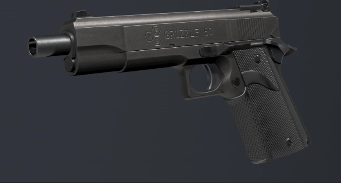

The MKV is a hand cannon chambered in the massive .50 AE cartridge, delivering unmatched stopping power at the cost of high recoil. Originally seized during raid in Port Hokan, the trial judge issued a confiscate and maintain order on this pistol thus becoming a property of the LSPD.
| caliber | RPM | Recoil | Capacity |
| .50 ACTION EXPRESS | 203 | VERYHIGH | 7 |
